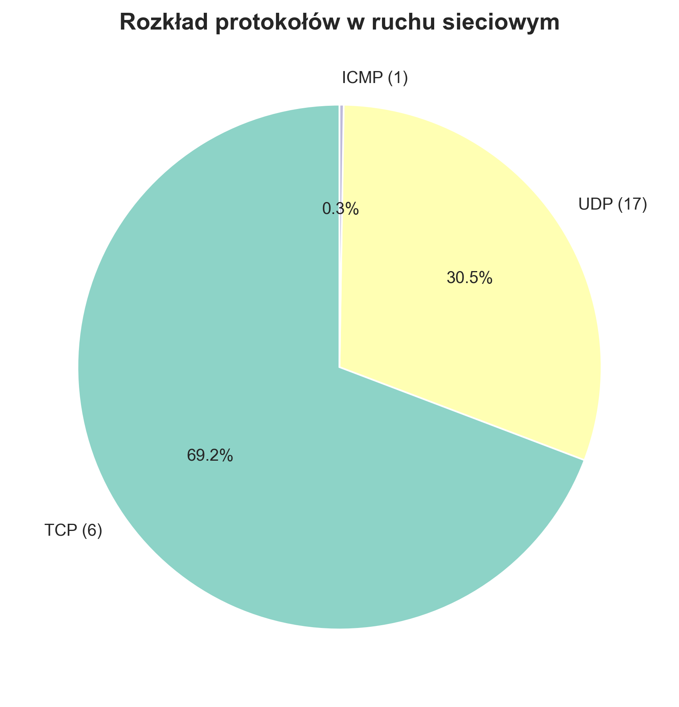
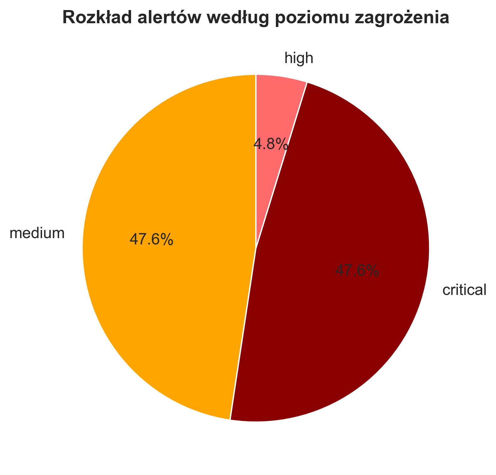
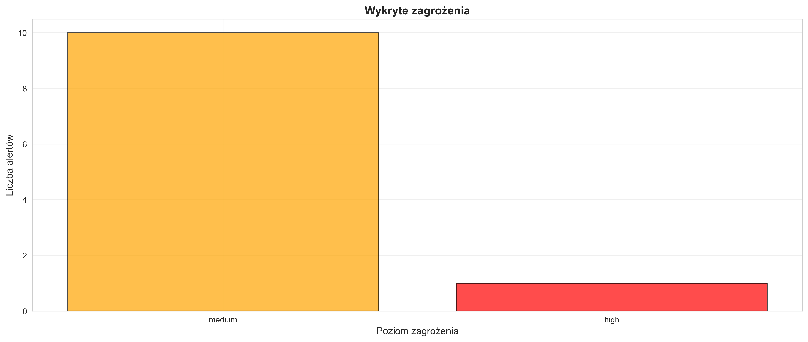
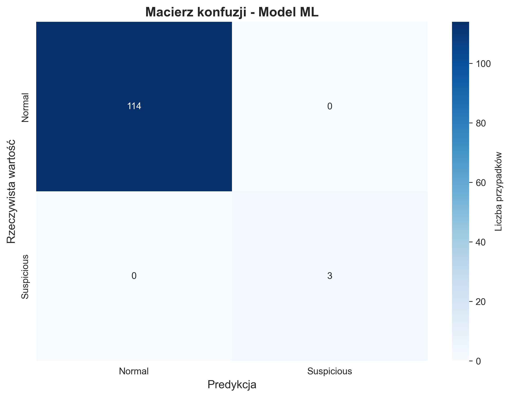
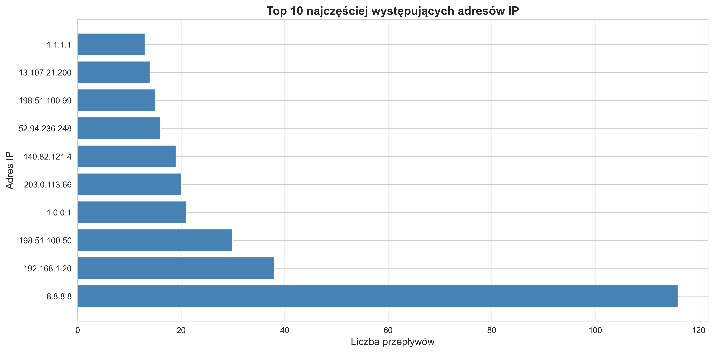

Statystyki Przeplywow A.1 A.2
Całkowita liczba przepływów
391
Unikalne IP źródłowe
106
Unikalne IP docelowe
42
Całkowita liczba pakietów
430
Całkowita liczba bajtów
71,102
Średnia pakietów/przepływ
1.10
Top 5 komunikacji między hostami
| # | IP Źródłowe | IP Docelowe | Pakiety | Bajty | Przepływy |
|---|---|---|---|---|---|
| 1 | 192.168.1.88 | 8.8.8.8 | 80 | 9,269 | 80 |
| 2 | 192.168.1.200 | 192.168.1.1 | 40 | 3,360 | 1 |
| 3 | 192.168.1.99 | 192.168.1.20 | 30 | 1,200 | 30 |
| 4 | 192.168.1.120 | 198.51.100.50 | 30 | 3,812 | 30 |
| 5 | 192.168.1.50 | 203.0.113.66 | 20 | 26,117 | 20 |
Wykryte Zagrozenia D.1 D.2 V.1
Laczna liczba alertow: 21
Alerty Python rules: 20 | Alerty Sigma rules: 21
Rozklad wedlug poziomu zagrozenia
MEDIUM
10
CRITICAL
10
HIGH
1
Lista alertów
| Reguła | Poziom | Wiadomość |
|---|---|---|
| Port Scan Detection | HIGH | Możliwe skanowanie portów z 192.168.1.99: 30 różnych portów docelowych |
| Suspicious Port Connection | MEDIUM | Połączenie do podejrzanego portu: 192.168.1.75 -> 203.0.113.100:4444 |
| Suspicious Port Connection | MEDIUM | Połączenie do podejrzanego portu: 192.168.1.75 -> 203.0.113.100:4444 |
| Suspicious Port Connection | MEDIUM | Połączenie do podejrzanego portu: 192.168.1.75 -> 203.0.113.100:4444 |
| Suspicious Port Connection | MEDIUM | Połączenie do podejrzanego portu: 192.168.1.75 -> 203.0.113.100:4444 |
| Suspicious Port Connection | MEDIUM | Połączenie do podejrzanego portu: 192.168.1.75 -> 203.0.113.100:4444 |
| Suspicious Port Connection | MEDIUM | Połączenie do podejrzanego portu: 192.168.1.75 -> 203.0.113.100:4444 |
| Suspicious Port Connection | MEDIUM | Połączenie do podejrzanego portu: 192.168.1.75 -> 203.0.113.100:4444 |
| Suspicious Port Connection | MEDIUM | Połączenie do podejrzanego portu: 192.168.1.75 -> 203.0.113.100:4444 |
| Suspicious Port Connection | MEDIUM | Połączenie do podejrzanego portu: 192.168.1.75 -> 203.0.113.100:4444 |
| Suspicious Port Connection | MEDIUM | Połączenie do podejrzanego portu: 192.168.1.75 -> 203.0.113.100:4444 |
| Metasploit Reverse Shell Connection | CRITICAL | Detects connections to port 4444, the default port for Metasploit reverse shell payloads. This is a strong indicator of compromise. MITRE ATT&CK: T1059 - Command and Scripting Interpreter |
| Metasploit Reverse Shell Connection | CRITICAL | Detects connections to port 4444, the default port for Metasploit reverse shell payloads. This is a strong indicator of compromise. MITRE ATT&CK: T1059 - Command and Scripting Interpreter |
| Metasploit Reverse Shell Connection | CRITICAL | Detects connections to port 4444, the default port for Metasploit reverse shell payloads. This is a strong indicator of compromise. MITRE ATT&CK: T1059 - Command and Scripting Interpreter |
| Metasploit Reverse Shell Connection | CRITICAL | Detects connections to port 4444, the default port for Metasploit reverse shell payloads. This is a strong indicator of compromise. MITRE ATT&CK: T1059 - Command and Scripting Interpreter |
| Metasploit Reverse Shell Connection | CRITICAL | Detects connections to port 4444, the default port for Metasploit reverse shell payloads. This is a strong indicator of compromise. MITRE ATT&CK: T1059 - Command and Scripting Interpreter |
| Metasploit Reverse Shell Connection | CRITICAL | Detects connections to port 4444, the default port for Metasploit reverse shell payloads. This is a strong indicator of compromise. MITRE ATT&CK: T1059 - Command and Scripting Interpreter |
| Metasploit Reverse Shell Connection | CRITICAL | Detects connections to port 4444, the default port for Metasploit reverse shell payloads. This is a strong indicator of compromise. MITRE ATT&CK: T1059 - Command and Scripting Interpreter |
| Metasploit Reverse Shell Connection | CRITICAL | Detects connections to port 4444, the default port for Metasploit reverse shell payloads. This is a strong indicator of compromise. MITRE ATT&CK: T1059 - Command and Scripting Interpreter |
| Metasploit Reverse Shell Connection | CRITICAL | Detects connections to port 4444, the default port for Metasploit reverse shell payloads. This is a strong indicator of compromise. MITRE ATT&CK: T1059 - Command and Scripting Interpreter |
Metryki Modelu Machine Learning ML.1 ML.2
Accuracy
1.0000
Precision
1.0000
Recall (TPR)
1.0000
F1 Score
1.0000
False Positive Rate
0.0000
True Negative Rate
1.0000
Model został wytrenowany z możliwością ponownego trenowania na nowych danych ML.3
Wizualizacje V.1 V.2
Protocols
Severity
Alerts
Confusion
Top Ips
Podsumowanie Spelnionych Wymagan
Lab 2 - Funkcjonalnosci Podstawowe (Must-have)
| ID | Wymaganie | Status |
|---|---|---|
| A.1 | Wczytywanie plikow PCAP przy uzyciu NFStream/Scapy | Spelnione |
| A.2 | Podsumowanie statystyk flow | Spelnione |
| D.1 | Implementacja regul detekcyjnych w Pythonie | Spelnione |
| V.1 | Wykres liczby wykrytych zagrozen | Spelnione |
Projekt 2 - Funkcjonalnosci Zaawansowane (Must-have)
| ID | Wymaganie | Status |
|---|---|---|
| D.2 | Wczytywanie regul w formacie Sigma (10 regul MITRE ATT&CK) | Spelnione |
| ML.1 | Klasyfikacja flow za pomoca ML | Spelnione |
| ML.2 | Redukcja FPR, metryki jakosci (FPR, TPR) | Spelnione |
| ML.3 | Mozliwosc trenowania modelu na nowych danych | Spelnione |
| E.1 | Enrichment IP/domen (Threat Intelligence) | Spelnione |
Funkcjonalności Nice-to-have
| ID | Wymaganie | Status |
|---|---|---|
| V.2 | Mapa geograficzna z lokalizacją podejrzanych IP | Zaimplementowane |